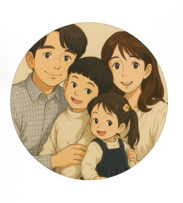

01↗
REAL ESTATE
WORKER · FATHER · INVESTOR
부동산과 미국 지수, 절세계좌까지.
두 아이 아빠가 직접 부딪치며 쌓은 투자의 기록을 나눕니다.

ABOUT JPAPA
제이파는 직장인이자 외벌이 가장, 그리고 토끼 같은 두 아이의 아빠입니다. 월급이라는 현실 위에서 가족의 더 나은 선택지를 만들기 위해 투자합니다.
거창한 성공담보다 직접 해본 사람만이 들려줄 수 있는 솔직한 과정. 숫자 뒤에 있는 고민과 판단까지, 함께 자유롭게 돈 이야기를 나눕니다.
WHAT I TALK ABOUT
완벽한 정답 대신, 평범한 직장인이 현실에서 적용할 수 있는 관점과 경험을 전합니다.
REAL ESTATE
US INDEX
TAX SAVING
MY PRINCIPLES
시장 안에 머물되, 삶을 잃지 않는 것.
가족과 함께 성장하는 투자를 지향합니다.
공부만 하는 투자보다 작은 실행에서 배우는 것을 믿습니다.
예측에 집착하지 않고 시장의 긴 흐름 안에 머뭅니다.
수익률보다 우리 가족의 안정과 행복을 우선합니다.
부자가 되는 것보다 중요한 건,
어떤 사람이 되어 어떤 삶을 사는가.
제이파가 투자를 지속하는 이유
@rich_jpapa